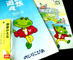

私も入っています。。
全国かえる奉賛会 全国かえる奉賛会に入会するには、自分のホームページに、上のバナーを貼り付けるだけ。どんどん入会しましょー。大王様に会うには、上の絵をクリック。ずずっと奥に写真館があるぞ。 |
|
【かえる古新聞】
|
|
【カエル速報】 1.カエルグッズ 2.カエルリンク 3.国家健全化計画 4.謎の髭男 5.とっくりくん 6.街頭で見た蛙 7.カエルショップ 8.奉納カエル絵馬 9.カエル・コスプレ 10.カエルな表紙 |
| 大王様へのメール |
奉賛会推薦菓子
かえる饅頭 この欄に紹介するカエル物品や書籍について情報を待ってます。みんなで掘り起こそう、カエル土産。かえる産品を奨励しよう！使うほど安く良くなるカエル品 |
|
|
職を捨てて宮崎にカエルが一番
|
 |
|
|
「カエル山」はのじりこぴあの入り口にあります。園内には、カエルグッズも販売されています。Ｔシャツ、ぬいぐるみ、キーホルダー、装飾のための置物、お守り的なものなどがあります。
情熱たぎる宮崎
ちなみに石崎雄三さんの熱き情熱を込めた宮崎県人のページにも行ってみよう。カエル山の謎を直撃取材
【福岡発=げこげこ大王７世】いただいたパンフレットをもとに、のじりこぴあに電話=0984-44-3000=取材を試みた。カエル山は、中央に高さ３メートル７０センチの大王カエルが鎮座。周囲を２２０匹の家臣がとりまいている。つまり全部で２２１匹ものカエル置物が群集しているのだ。園の人によると『ここは、いなかなので、過疎化が進んでいます。みんなが故郷にカエルように願いを込めて作りました』というそうだ。
２２１匹という数には意味があって、のじりとぴあを取りまく、えびの市、小林市、野尻町、高原町、須木村の【２市２町１村】にちなんで、２２１匹になっているのだ！
さあ、故郷をあとにした宮崎県民の諸君、もう一刻の猶予もないぞ。いますぐ職を捨てて、故郷に戻ろう。そうして、のじりこぴあ、を真のカエルぴあ、とするべく、和歌山県の印南町に負けない、九州最強のカエルランド建設のために立ち上がろう！！
群馬カエル情報を急募
【全国かえる奉賛会】群馬県内のある放送局が、群馬県内のカエル情報を調査中、と全国カエル奉賛会に情報提供を求めている。北関東は、カエルものの宝庫といわれている。群馬県にも何かないか！至急情報を待つ。情報はここに↓ wakuro-3@hf.rim.or.jp６月６日はカエルの日
【かえる友の会発=島崎るりだ靖子だけろ同志】かえる友の会会員情報によると、「けろけろ」にちなんで６月６日を「かえるの日」として日本記念日協会に申請、正式に認定されたそうです。来年からカレンダーに「かえるの日」が載るそうです。すごいぞー島崎るりだ靖子さん直筆署名
ivivi ＠ ＠ �｡ （ - ）/ 島崎 靖子【全国かえる奉賛会】アクセス５５５５人目に、贈るプレゼントは、福岡市のキャナルシティーのヒヨコ・カエルショップで売っていたキーホルダー。みごとに到達した宮垣 亜希さまにキーホルダーが授与されまああっす。けろけろ。こいつあー梅雨から縁起がいいねいっ宮垣亜希さま。
| カエルねたを取材するとき◆『インターネットでカエル新聞やってるんですけど。。。』電話とか、現場にでかけていって、カエルな人々に話を聞くときに、こんな前置きをすることが多くなったな◆でも、カエルな人々とは、この自己紹介があれば、何の障害もなく話がスムーズにいってしまうんだよね◆怪しまれたことは一度も無いけど、でも、みんな納得してくれてるんだろうか(笑) |